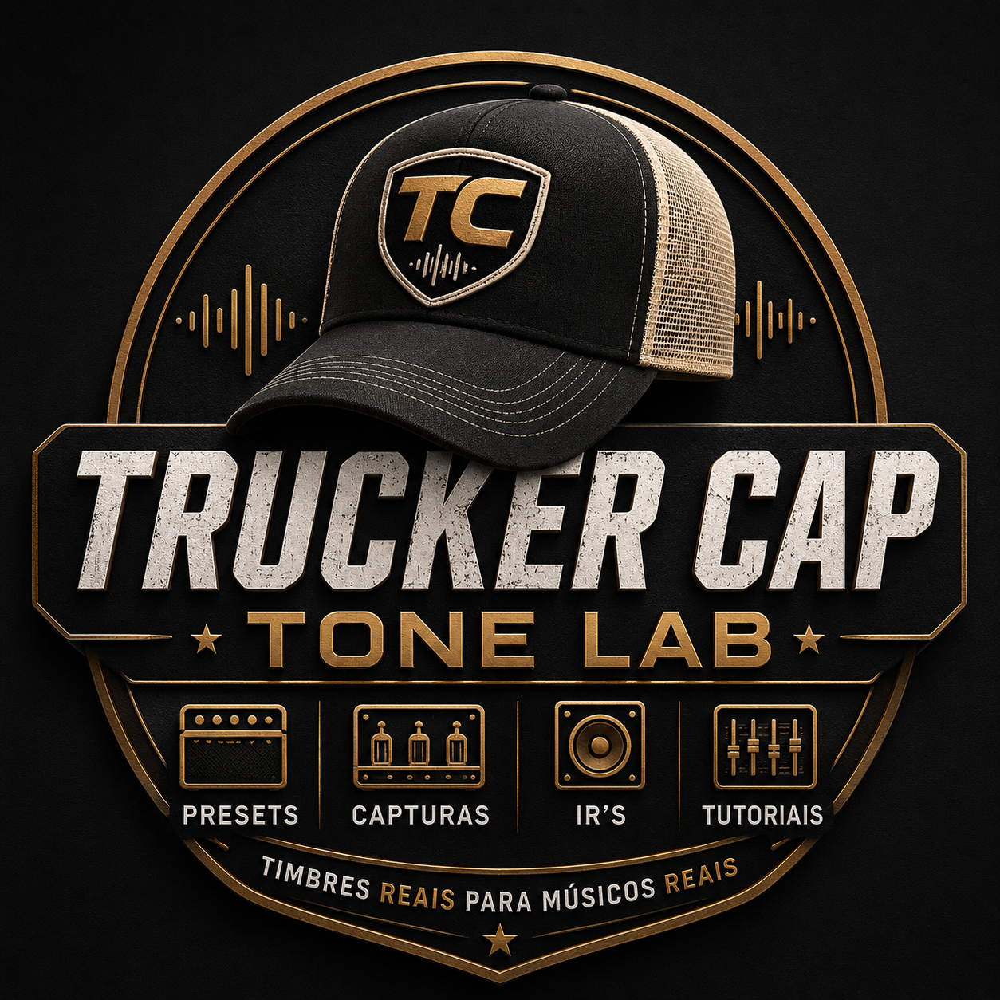

Trucker Cap Tone Lab
Presets para Pedaleiras
Escolha sua pedaleira e encontre timbres organizados para tocar, gravar e subir ao palco.

Escolha seu equipamento
Presets organizados por pedaleira
Esta seção crescerá junto com o Tone Lab. Novas pedaleiras serão adicionadas aos poucos.